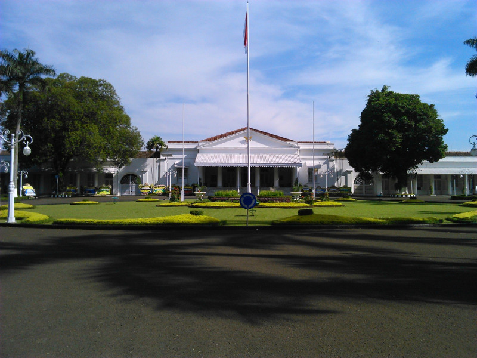

Kota metropolitan terbesar di Provinsi Jawa Barat, sekaligus menjdi ibu
kota provinsi tersebut.
Sejarah

Kata Bandung berasal dari kata bending atau bendungan karena
terbendungnya sungai Citarum oleh lava Gunung Tangkuban Parahu yang
lalu membentuk telaga. Legenda yang diceritakan oleh orang-orang tua
di Bandung mengatakan bahwa nama Bandung diambil dari sebuah
kendaraan air yang terdiri dari dua perahu yang diikat berdampingan
yang disebut perahu bandung yang digunakan oleh Bupati Bandung, R.A.
Wiranatakusumah II, untuk melayari Ci Tarum dalam mencari tempat
kedudukan kabupaten yang baru untuk menggantikan ibu kota yang lama
di Dayeuhkolot.
berdasarkan filososgi sunda, kata bandung juga berasal dari kalimat
Nga-Bandung-an Banda Indung, yang merupakan kalimat sakral dan luhur
karena mengandung nilai ajaran Sunda. Nga-Bandung-an menyaksikan
atau bersaksi. Banda adalah segala sesuatu yang berada di alam hidup
yaitu di bumi dan atmosfer, baik makhlukhidup maupun benda mati.
Sinonim dari banda adalah harta. Indung berarti Ibu atau Bumi,
disebut juga sebagai ibu pertiwi tempat Banda berada.
Geografis
Kota Bandung dikelilingi oleh pegunungan, sehingga bentuk morfologi
wilayahnya bagaikan sebuah mangkok raksasa, secara geografis kota
ini terletak di tengah-tengah provinsi Jawa Barat, serta berada pada
ketinggian ±768 m di atas permukaan laut, dengan titik tertinggi di
berada di sebelah utara dengan ketinggian 1.050 meter di atas
permukaan laut dan sebelah selatan merupakan kawasan rendah dengan
ketinggian 675 meter diatas permukaan laut.
Kota Bandung dialiri dua sungai utama, yaitu Sungai Cikapundung dan
Sungai Citarum beserta anak-anak sungainya yang pada umumnya
mengalir ke arah selatan dan bertemu di Sungai Citarum. Dengan
kondisi yang demikian, Bandung selatan sangat rentan terhadap
masalah banjur terutama pada musim hujan.
Wisata
Sejak dibukanya Jalan Tol Cipularang, kota Bandung telah menjadi
tujuan utama dalam menikmati liburan akhir pekan terutama dari
masyarakat yang berasal dari Jakarta sekitarnya. Selain menjadi
kota wisata belanja, kota Bandung juga dikenal dengan sejumlah
besar bangunan lama berarsitektur peninggalan Belanda.
Farm House Lembang
Berada di jalur utama Bandung-Lembang, Farm House menjadi objek
wisata yang tidak pernah sepi pengunjung. Selain karena letaknya
strategis, kawasan ini juga menghadirkan nuansa wisata khas
Eropa.Semua itu diterapkan dalam bentuk spot swafoto
Instagramable.
Observatorium Bosscha
Memiliki beberapa teleskop, antara lain, Refraktor Ganda Zeiss,
Schmidt Bimasakti, Refraktor Bamberg, Cassegrain GOTO, dan
Teleskop Surya. Refraktor Ganda Zeiss adalah jenis teleskop
terbesar untuk meneropong bintang. Benda ini di letakkan pada atap
kubah sehingga saat teropong digunakan, atap tersebut harus
dibuka. Observatorium Bosscha boleh dikunjungi oleh siapa pun,
tanpa tiket. Namun, bagi yang ingin menggunakan teleskop Zeiss,
wajib mendaftarkan diri. Untuk in stansi atau lembaga pendidikan,
diberikan jadwal hari Selasa sampai Jumat. Sementara itu,
kunjungan individu dibuka setiap hari Sabtu.